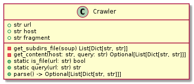
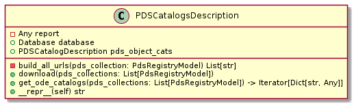
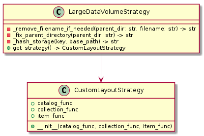

Reference manual¶
Introduction¶
This section is the reference manual of the Python API.
Extraction¶
Introduction¶
Package: extractor
Description: This package contains a collection of modules to extract information from PDS WS and PDS web site.
Exported components:
pds_ode_website: A module that parses the PDS3 Dataset explorer to get the different catalogs.
pds_ode_ws: A module that provides the metadata for the observations and collections by querying ODE web services.
Usage: To use this package, you can import and use the exported components as follows:
from pds_crawler.extractor import PdsRegistry
from pds_crawler.models import PdsRegistryModel
from pds_crawler.load import Database
from typing import Tuple, Dict, List
# Create a database to store the results
database = Database('work/database')
# Create an instance of PdsRegistry to get the collections
pds_registry = PdsRegistry(database)
# Retrieve all the georeferenced collections list
results: Tuple[Dict[str,str], List[PdsRegistryModel]] = pds_registry.get_pds_collections()
By knowing the collection and a record, it is possible to retrieve additional metadata describing general collection information. This metadata is richer than the metadata provided in the records of the collection.
Now , we need to download the records. To limit the time to wait, only the first page is downloaded
from pds_crawler.extractor import PdsRegistry, PdsRecordsWs
pds_collection = results[1][60]
pds_records_ws = PdsRecordsWs(database)
pds_records_ws.download_pds_records_for_one_collection(pds_collection, 1)
Now, we can retrieve the catalogs that describes the metadata for mission, plateform, instrument and collection
from pds_crawler.extractor import PDSCatalogsDescription, PDSCatalogDescription
# download the catalogs in the storage
cats = PDSCatalogsDescription(database)
cats.download([pds_collection])
# Retrieve the catalogs from the storage
pds_objects_cat = PDSCatalogDescription(database)
pds_objects_cat.get_ode_catalogs(pds_collection)
Module for extracting records and collections from ODE web service¶
- Module Name:
pds_ode_ws
- Description:
the pds_ode_ws provides the metadata for the observations by querying ODE web services.
- Classes:
- PdsRegistry :
Provides the list of georeferenced PDS collections by retrieving a list of Planetary Data System (PDS) data collections rom the PDS ODE (Outer Planets Data Exploration) web service.
- PdsRecordsWs :
Handles the PDS records (download, store and load the records for one of several PDS collection).
- Author:
Jean-Christophe Malapert
Searching for collections¶
- class pds_crawler.extractor.pds_ode_ws.PdsRegistry(database: pds_crawler.load.database.Database, *args, **kwargs)[source]¶
Provides the list of georeferenced PDS collections by retrieving a list of Planetary Data System (PDS) data collections rom the PDS ODE (Outer Planets Data Exploration) web service.
![class PdsRegistry {
+Database database
- build_params(target: str = None) Dict[str, str]
- get_response(params: Dict[str, str]) str
- parse_response_collection(response: str) Tuple[Dict[str, int], List[PdsRegistryModel]]
+ get_pds_collections(body: str = None) Tuple[Dict[str, str], List[PdsRegistryModel]]
+ cache_pds_collections(pds_collections: List[PdsRegistryModel])
+ load_pds_collections_from_cache() List[PdsRegistryModel]
+ query_cache(dataset_id: str) Optional[PdsRegistryModel]
+ distinct_dataset_values() Set
}](_images/plantuml-50ae89d405247a89f6711714a7443b310344a256.png)
- __init__(database: pds_crawler.load.database.Database, *args, **kwargs)[source]¶
Initializes the collection by setting a database to store the content that has been retrieved from the PDS
- Parameters
database (Database) – database
- _build_request_params(target: Optional[str] = None) Dict[str, str][source]¶
Build the query parameters.
- Parameters
target (str, optional) – target. Defaults to None.
- Returns
Query parameters
- Return type
Dict[str, str]
- _get_response(params: Dict[str, str]) str[source]¶
Returns the content of web service response designed by the SERVICE_ODE_END_POINT and the query params.
- Parameters
params (Dict[str, str]) – Query parameters
- Raises
Exception – PDS ODE REST API query error
- Returns
the content of the web service response
- Return type
str
- _parse_collection_response(response: str, dataset_id: Optional[str] = None) Tuple[Dict[str, int], List[pds_crawler.models.ode_ws_models.PdsRegistryModel]][source]¶
Parses the JSON response and returns a tuple that contains a statistic dictionary and a list of PdsRegistryModel objects.
- Parameters
response (str) – JSON response
dataset_id (Optional[str]) – dataset_id parameter, used to filter the response. Defaults to None
- Returns
statistic dictionary and a list of PdsRegistryModel objects
- Return type
Tuple[Dict[str, int], List[PdsRegistryModel]]
- cache_pds_collections(pds_collections: List[pds_crawler.models.ode_ws_models.PdsRegistryModel])[source]¶
Caches the PDS collections information by saving the PDS collections in the database.
- Parameters
pds_collections (List[PdsRegistryModel]) – the PDS collections information
- property database: pds_crawler.load.database.Database¶
Returns the database
- Returns
database
- Return type
- distinct_dataset_values() Set[source]¶
Gets a set of distinct values for the DataSetId attribute of PdsRegistryModel objects in a local cache of PDS data collections.
- Returns
Distinct values for the DataSetId attribute
- Return type
Set
- get_pds_collections(body: Optional[str] = None, dataset_id: Optional[str] = None) Tuple[Dict[str, int], List[pds_crawler.models.ode_ws_models.PdsRegistryModel]][source]¶
Retrieve a list of Planetary Data System (PDS) data collections from the PDS ODE (Outer Planets Data Exploration) web service.
The method takes an optional body argument that specifies the name of the body for which to retrieve collections. If no argument is provided, the method retrieves collections for all bodys. The method sends an HTTP request to the PDS ODE web service with the appropriate parameters constructed from the body argument and parses the JSON response to extract the data collections. It then returns a tuple containing a dictionary of statistics and a list of PdsRegistryModel objects representing the data collections.
- Parameters
body (str, optional) – body. Defaults to None.
dataset_id (str, optional) – dataset ID. Defaults to None.
- Returns
a dictionary of s tatistics and a list of PdsRegistryModel objects representing the data collections
- Return type
Tuple[Dict[str, str], List[PdsRegistryModel]]
- load_pds_collections_from_cache(body: Optional[str] = None, dataset_id: Optional[str] = None) List[pds_crawler.models.ode_ws_models.PdsRegistryModel][source]¶
Loads the PDS collections information from the cache by loading the information from the database.
- Parameters
body (Optional[str], optional) – name of the body to get. Defaults to None.
dataset_id (Optional[str], optional) – Dataset ID parameter, used to filter the collection. Defaults to None.
- Returns
the PDS collections information
- Return type
List[PdsRegistryModel]
- query_cache(dataset_id: str) Optional[pds_crawler.models.ode_ws_models.PdsRegistryModel][source]¶
Query a local cache of PDS data collections for a specific dataset identified by its ID.
- Parameters
dataset_id (str) – ID of thr dataset
- Returns
PDS data collection
- Return type
Optional[PdsRegistryModel]
Searching for records in a given collection¶
- class pds_crawler.extractor.pds_ode_ws.PdsRecordsWs(database: pds_crawler.load.database.Database, *args, **kwargs)[source]¶
Handles the PDS records web service.
Responsible to download from the web service and stores the JSON response in the database. This class is also responsible to parse the stored JSON and converts each record in the PdsRecordsModel.
![class PdsRecordsWs {
+Database database
- build_params(target: str, ihid: str, iid: str, pt: str, offset: int, limit: int = 1000,) Dict[str, str]
- generate_all_pagination_params(target: str, ihid: str, iid: str, pt: str, total: int, offset: int = 1, limit: int = 1000) List[Tuple[str, Any]]
- generate_urls_for_pages(self, all_pagination_params: List[Tuple[str]]) -> List[str]
- __repr__(self) str
+ generate_urls_for_one_collection(pds_collection: PdsRegistryModel, offset: int = 1, limit: int = 5000):
+ generate_urls_for_all_collections(pds_collection: List[PdsRegistryModel], offset: int = 1, limit: int = 5000)
+ generate_urls_for_all_collections(pds_collections: List[PdsRegistryModel], offset: int = 1, limit: int = 5000)
+ download_pds_records_for_one_collection(pds_collection: PdsRegistryModel, limit: Optional[int] = None)
+ download_pds_records_for_all_collections(pds_collections: List[PdsRegistryModel])
+ parse_pds_collection_from_cache(pds_collection: PdsRegistryModel, disable_tqdm: bool = False) Iterator[PdsRecordsModel]
}](_images/plantuml-1c5c26aacb224cc18c0fd78aefa6990c7f5beb4d.png)
- __init__(database: pds_crawler.load.database.Database, *args, **kwargs)[source]¶
Init the observable
- _build_request_params(target: str, ihid: str, iid: str, pt: str, offset: int, limit: int = 1000) Dict[str, str][source]¶
Builds the query parameters.
- Parameters
target (str) – body
ihid (str) – plateforme
iid (str) – instrument
pt (str) – product type
offset (int) – record number where the pagination start
limit (int, optional) – number of records in the response. Defaults to 1000.
- Returns
key/value to prepare the query
- Return type
Dict[str, str]
- _generate_all_pagination_params(target: str, ihid: str, iid: str, pt: str, total: int, offset: int = 1, limit: int = 1000) List[Tuple[str, Any]][source]¶
Generates all pagination parameters
- Parameters
target (str) – body
ihid (str) – plateform
iid (str) – instrument
pt (str) – product type
total (int) – total number of records that we want
offset (int, optional) – record number where the pagination starts. Defaults to 1.
limit (int, optional) – maximum number of records in the response. Defaults to 1000.
- Returns
List of (target, ihid, iid, pt, total, pagination_start, limit)
- Return type
List[Tuple[str]]
- _generate_urls_for_pages(all_pagination_params: List[Tuple[str]]) List[str][source]¶
Generates all URLs based on all pagination parameters of the pages
- Parameters
all_pagination_params (List[Tuple[str]]) – pargination parameters for all pages
- Returns
all URLs
- Return type
List[str]
- property database: pds_crawler.load.database.Database¶
Returns the database
- Returns
database
- Return type
- download_pds_records_for_all_collections(pds_collections: List[pds_crawler.models.ode_ws_models.PdsRegistryModel], limit: Optional[int] = None, nb_workers: int = 3, time_sleep: int = 1, progress_bar: bool = True)[source]¶
Download PDS records for all collections
- Parameters
pds_collections (List[PdsRegistryModel]) – _description_
limit (Optional[int], optional) – Number of pages. Defaults to None.
nb_workers (int, optional) – Number of workers in parallel. Defaults to 3.
time_sleep (int, optional) – Time to way between two download series. Defaults to 1.
progress_bar (bool, optional) – Set progress bar. Defaults to True.
- download_pds_records_for_one_collection(pds_collection: pds_crawler.models.ode_ws_models.PdsRegistryModel, limit: Optional[int] = None, nb_workers: int = 3, time_sleep: int = 1, progress_bar: bool = True)[source]¶
Download records for a given PDS collection based on the set of URLs loaded from the database.
- Parameters
pds_collection (PdsRegistryModel) – PDS collection
limit (int, optional) – Number of pages. Defaults to None.
nb_workers (int, optional) – Number of workers in parallel. Defaults to 3.
time_sleep (int, optional) – Time to way between two download series. Defaults to 1.
progress_bar (False, optional) – Set progress_bar. Defaults to True.
- generate_urls_for_all_collections(pds_collections: List[pds_crawler.models.ode_ws_models.PdsRegistryModel], offset: int = 1, limit: int = 5000)[source]¶
Generates the URLs for all the collections and save them in the database.
There Urls will be used to dowload massively the records.
- Parameters
pds_collections (List[PdsRegistryModel]) – PDS collections
offset (int, optional) – record number. Defaults to 1.
limit (int, optional) – limit per page. Defaults to 5000.
- generate_urls_for_one_collection(pds_collection: pds_crawler.models.ode_ws_models.PdsRegistryModel, offset: int = 1, limit: int = 5000)[source]¶
Generates the URLs for one collection and save them in the database.
There Urls will be used to dowload massively the records.
- Parameters
pds_collection (PdsRegistryModel) – pds collection
offset (int, optional) – record number from which the response starts. Defaults to 1.
limit (int, optional) – maximum number of records per page. Defaults to 5000.
- parse_pds_collection_from_cache(pds_collection: pds_crawler.models.ode_ws_models.PdsRegistryModel, progress_bar: bool = True) Iterator[pds_crawler.models.ode_ws_models.PdsRecordsModel][source]¶
Parses the PDS records from cache.
Responsible for parsing PDS records from the local cache of the PDS catalogs.
It takes a PdsRegistryModel object as input, which contains the metadata needed to locate the downloaded PDS records in the local cache.
If the parsing is successful and the resulting PdsRecordsModel object is not None, the method yields the object. If the parsing fails, the method logs an error message and notifies its observers with a MessageModel object containing information about the file and the error.
- Parameters
pds_collection (PdsRegistryModel) – PDS collection of the registry
progress_bar (bool, optional) – use progress bar. Defaults to True.
- Yields
Iterator[PdsRecordsModel] – Iterator on the list of records_
Module for extracting PDS3 objects from the ODE archive¶
- Module Name:
pds_ode_website
- Description:
the pds_ode_website module parses the PDS3 Dataset explorer to get the different catalogs to download them.
- Classes:
- Crawler :
Crawles the content of the Dataset explorer web site.
- PDSCatalogDescription :
Parses the content of the PDS3 catalogs for a given PDS collection.
- PDSCatalogsDescription :
Downloads the PDS3 objects (catalogs) on the local storage and parses the PDS3 objects from the local storage
- Author:
Jean-Christophe Malapert
Extracting URLs of PDS3 objects¶
- class pds_crawler.extractor.pds_ode_website.Crawler(url: str)[source]¶
Crawles the content of the Dataset explorer web site.
The main purpose of the class is to retrieve the links and subdirectories from the given web page and return them as a list. The class also checks if a given URL is a file or a directory and raises an exception if no files exist in the folder.

- _get_content(host: str, query: str) List[Dict[str, str]][source]¶
Get the content of an URL based on the host and the query
- Parameters
host (str) – host
query (str) – query
- Raises
NoFileExistInFolder – When there is no file in the folder
- Returns
links (url/name)
- Return type
List[Dict[str, str]]
- _get_subdirs_file(soup) List[Dict[str, str]][source]¶
Parses the HTML content of a web page, and extracts links to subdirectories and files from the page.
The method first finds all “table” elements in the parsed HTML content and stores them in a list. It then creates an empty list called “links” to store the links that it finds.
Next, the method looks for “a” elements within the last table in the list of tables. It only considers “a” elements that have an “href” attribute and do not have a “title” attribute. For each “a” element that meets these criteria, the method creates a dictionary with two key-value pairs: “url” and “name”. The “url” value is set to the value of the “href” attribute, which is the URL of the link. The “name” value is set to the text content of the “a” element, which is usually the name of the subdirectory or file.
- Parameters
soup (_type_) – Soup
- Returns
links
- Return type
List[Dict[str, str]]
- property fragment: str¶
Returns the fagment of the URL
- Returns
the fagment of the URL
- Return type
str
- property host: str¶
Returns the host of the query
- Returns
host
- Return type
str
- static is_file(url: str) bool[source]¶
Tests whether the URL points to a file or not.
The method extracts the last fragment of the path, which is usually the name of the file or directory being pointed to. If the last fragment contains a period (“.”) character, it is considered to be a file and not a directory. The method then checks if the characters after the last period character are numeric (indicating a file with an extension like “.mp3” or “.txt”), and if they are not numeric, it returns True to indicate that the URL points to a file.
- Parameters
url (str) – URL
- Returns
True if the URL points to a File otherwise False
- Return type
bool
- parse() List[Dict[str, str]][source]¶
Parse the URL
- Returns
links (url/name)
- Return type
List[Dict[str, str]]
- static query(url: str) str[source]¶
Extracts the content of the URL with 3 retries with a timeout of 5s
- Parameters
url (str) – URL
- Returns
the content of the URL
- Return type
str
- property url: str¶
Returns the URL to parse
- Returns
URL
- Return type
str
Extracting PDS3 objects¶
- class pds_crawler.extractor.pds_ode_website.PDSCatalogDescription(database: pds_crawler.load.database.Database, *args, **kwargs)[source]¶
Class that handles the PDS catalogs, based on the PDS3 objects.
This class can :
load the URLs of all PDS catalogs for a given collection from the ODE web site.
get ODE catalogs objects from local storage
Note : The download of the PDS catalogs in the local storage is done by the PDSCatalogsDescription object, which performs a massive download in the local storage
![class PDSCatalogDescription {
- Any report
+ str url
+ VolumeModel vol_desc_cat
+ str volume_desc_url
+ PdsRecordsWs pds_records
+ PdsRegistryModel pds_collection
+ database Database
+ PdsRecordsModel record
+ List[str] catalogs_urls
- build_url_ode_collection()
- find_volume_desc_url() str
- parse_volume_desc_cat() VolumeModel
- load_volume_description()
- find_catalogs_urls() -> List[Dict[str, str]]
- is_catalog_exists(catalog_name: Any) -> bool
- get_url_for_multiple_catalogs(catalogs: List[str], catalogs_from_desc_cat: Dict[str, str]) List[str]
- get_url_for_simple_catalog(catalog_name: str, catalogs_from_desc_cat: Dict[str, str]) List[str]
- get_urls_from_catalog_type(catalog_name: Union[str, List[str]], catalogs_from_desc_cat: Dict[str, str]) List[str]
- parse_catalog(file_storage: PdsStorage, catalog_name: str, cat_type: str, result: Dict[str, Union[str, List[str]]])
+ load_catalogs_urls() List[str]
+ get_ode_catalogs(pds_collection: PdsRegistryModel) Dict[str, Any]
+ __repr__(self) str
}](_images/plantuml-a6583f5439d58ae0801c0855eccd92f4ed6c9c7f.png)
- __init__(database: pds_crawler.load.database.Database, *args, **kwargs)[source]¶
Initialize the object with a database to store the information.
- Parameters
database (Database) – database
- _build_url_ode_collection(volume_id: Optional[str] = None)[source]¶
Computes the ODE URL.
This ODE URL is used to parse the web page to get the PDS objects. Sometimes the volume_id value is renamed. In this case, the web page must be parsed by getting the volume_id label to find the correct volume_id
- Parameters
with_volume_id (str, optional) – volume_id to set. Defaults to None.
- _find_catalogs_urls() List[Dict[str, str]][source]¶
Retrieve the URL of the PDS object by parsing the ODE URL.
- Returns
Catalogs name and its URL
- Return type
List[Dict[str, str]]
- _find_volume_desc_url() str[source]¶
Find the URL volume description by parsing the ODE URL.
The volume description contains all the references to the interesting catalogs to parse.
- Raises
NoFileExistInFolder – voldesc.cat file not found in PDS catalog
- Returns
the Volume description URL
- Return type
str
- _find_volume_id() str[source]¶
Find volume_id in web page
- Raises
NoFileExistInFolder – Volume_id not found
- Returns
volume_id
- Return type
str
- _get_url_for_multiple_catalogs(catalogs: List[str], catalogs_from_desc_cat: Dict[str, str]) List[str][source]¶
Get the URLs for all the PDS objects
- Parameters
catalogs (List[str]) – PDS object name
catalogs_from_desc_cat (Dict[str, str]) – _description_
- Returns
Returns the URLs of the PDS objects
- Return type
List[str]
- _get_url_for_simple_catalog(catalog_name: str, catalogs_from_desc_cat: Dict[str, str]) List[str][source]¶
Returns the URL of the catalog name that is contained in catalogs_from_desc_cat
- Parameters
catalog_name (str) – catalog name
catalogs_from_desc_cat (Dict[str, str]) – list of catalogs
- Returns
the URL of the catalog name
- Return type
List[str]
- _get_urls_from_catalog_type(catalog_type: Union[str, List[str]], catalogs_from_desc_cat: Dict[str, str]) List[str][source]¶
Returns the URLs of the catalog type that is contained in catalogs_from_desc_cat
A catalog type can be associated to one or several catalogs. The list of catalogs (URL included) is provided by catalogs_from_desc_cat
- Parameters
catalog_type (Union[str, List[str]]) – catalog type
catalogs_from_desc_cat (Dict[str, str]) – list of catalogs
- Returns
_description_
- Return type
List[str]
- _get_urls_from_volume_catalog() List[str][source]¶
Get catalog URLs associated of the catalogs in the Volume catalog.
- Returns
List of URLs
- Return type
List[str]
- _is_catalog_exists(catalog_name: Any) bool[source]¶
Checks if the catalog_name is set.
- Parameters
catalog_name (Any) – object to test
- Returns
True if the cataloh_name is not None otherwise False
- Return type
bool
- _parse_catalog(file_storage: pds_crawler.load.database.PdsCollectionStorage, catalog_name: str, cat_type: str, result: Dict[str, Union[str, List[str]]], timeout: int = 30)[source]¶
Parses the PDS object (catalog_name), represented by a catalog type and stored on the file storage with a specific implementation associated to the catalog_type.
The catalog is parsed by using the get_catalog`method from the PdsStorage object. The result is then stored in result variable where the key is the `catalog_type. At each catalog_type is associated one or several catalogs.
If the parsing is not successful, the eror message is notified by the use of MessageModel object.
- Parameters
file_storage (PdsCollectionStorage) – storage where the PDS objects have been downloaded
catalog_name (str) – catalog name that must be parsed
cat_type (str) – Type of catalog where an implementation is associated
result (Dict[str, Union[str, List[str]]]) – the catalogs in the Volume description
timeout (int, optional) – parser timeout in seconds. Defaults to 30
- _parse_volume_desc_cat() pds_crawler.models.pds_models.VolumeModel[source]¶
Set the volume description file by parsing the ODE URL.
- Raises
PdsCatalogDescriptionError – Error when getting or parsing the volume description file
- Returns
the Volume description object
- Return type
VolumeModel
- get_ode_catalogs(pds_collection: pds_crawler.models.ode_ws_models.PdsRegistryModel, timeout: int = 30) Dict[str, Any][source]¶
Returns the PDS objects for a given space mission collection.
The function retrieves the PdsStorage object associated with the PdsRegistryModel using get_pds_storage_for(), and then retrieves the description of the volume containing the PDS objects with get_volume_description(). It then lists the different types of catalogs in the directory using list_catalogs(), and for each catalog, it uses _parse_catalog() to retrieve information on each catalog.
- Parameters
pds_collection (PdsRegistryModel) – the space mission collection
timeout (int) – parser timeout in seconds. Default to 30
- Raises
TypeError – Illegal datatype for catalog
- Returns
list of PDS Object name and its object
- Return type
Dict[str, Any]
- load_catalogs_urls(pds_collection: pds_crawler.models.ode_ws_models.PdsRegistryModel, progress_bar: bool = True)[source]¶
Loads the catalogs URLs from cache for a given pds_collection collection.
- Parameters
pds_collection (PdsRegistryModel) – PDS collection
progress_bar (bool, True) – Set progress_bar. Defaults to True.
- property pds_collection: pds_crawler.models.ode_ws_models.PdsRegistryModel¶
PDS collection that contains the PDS catalogs.
- Returns
_description_
- Return type
PdsRegistryModel
- property pds_records: pds_crawler.extractor.pds_ode_ws.PdsRecordsWs¶
Returns the PDS records object to access to the data from the local cache.
- Returns
PDS records
- Return type
- property url: str¶
ODE URL that hosts the PDS catalogs
- Returns
URL
- Return type
str
- property vol_desc_cat: pds_crawler.models.pds_models.VolumeModel¶
Returns the volume description catalog.
- Returns
the volume description catalog
- Return type
VolumeModel
- property volume_desc_url: str¶
The volume description URL
- Returns
the volume description URL
- Return type
str
- class pds_crawler.extractor.pds_ode_website.PDSCatalogsDescription(database: pds_crawler.load.database.Database, *args, **kwargs)[source]¶
Provides the means to download the PDS catalogs (PDS objects).

- __init__(database: pds_crawler.load.database.Database, *args, **kwargs)[source]¶
Initialize the means to download by using a database to store the results.
- Parameters
database (Database) – database
- _build_all_urls(pds_collection: pds_crawler.models.ode_ws_models.PdsRegistryModel, progress_bar: bool = True) List[str][source]¶
Builds all the PDS objects URLs for collections of space missions.
These URLs are used to retrieve all PDS objects.
- Parameters
pds_collection (PdsRegistryModel) – the collections of space missions
progress_bar (bool, True) – Set progress_bar. Defaults to True.
- Returns
List of URLs
- Return type
List[str]
- download(pds_collections: List[pds_crawler.models.ode_ws_models.PdsRegistryModel], nb_workers: int = 3, time_sleep: int = 1, progress_bar: bool = True)[source]¶
Downloads the PDS objects for the collections of space missions.
This method is responsible for downloading the PDS objects for the given collections of space missions. It does so by building a list of URLs of PDS objects, creating a PdsStorage instance for the given collection, and using the parallel_requests method to download each PDS object. The parallel_requests function is likely using threading or multiprocessing to download the objects in parallel, which is a good optimization to speed up the download process.
- Parameters
pds_collections (List[PdsRegistryModel]) – the collections of space missions
nb_workers (int, optional) – Number of workers in parallel. Defaults to 3.
time_sleep (int, optional) – Time to way between two download series. Defaults to 1.
progress_bar (bool, True) – Set progress_bar. Defaults to True.
- get_ode_catalogs(pds_collections: List[pds_crawler.models.ode_ws_models.PdsRegistryModel], timeout: int = 30) Iterator[Dict[str, Any]][source]¶
Get all the PDS objects for the pds_collections.
This class PDSCatalogsDescription provides the means to download the PDS catalogs for the PDS collections. It has three main methods: 1. _build_all_urls(): Builds all the PDS object URLs for a given collection of space missions. This method is used to retrieve all the PDS objects of a collection. 2. download(): Downloads the PDS objects for the PDS collections. It takes a list of PdsRegistryModel as input and downloads the PDS objects for each collection. 3. get_ode_catalogs(): Gets all the PDS objects for a list of collections of space missions. It takes a list of PdsRegistryModel as input and returns an iterator that yields a dictionary containing the PDS object name and its object. The method internally calls the get_ode_catalogs() method of the PDSCatalogDescription class, which retrieves the PDS objects for a given collection.
- Parameters
pds_collections (List[PdsRegistryModel]) – the collections of the space mission.
timeout (int, optional) – parser timeout in seconds. Defaults to 30
- Yields
Iterator[Dict[str, Any]] – PDS object name and its object
Transformation¶
Introduction¶
Package: transformer
Description: This package contains a collection of modules to transform extracted information to STAC.
Exported components:
StacCatalogTransformer: A module that converts the extracted PDS catalogs to STAC.
StacRecordsTransformer: A module that converts the extracted responses from PDsRecordsWs to STAC.
Usage: To use this package, you can import and use the exported components as follows:
from pds_crawler.extractor import PDSCatalogsDescription
from pds_crawler.transformer import StacCatalogTransformer
cats = PDSCatalogsDescription(database)
cats.download([pds_collection])
transf = StacCatalogTransformer(database)
transf.to_stac(cats, [pds_collection])
transf.save()
Module for STAC stransformation¶
- Module Name:
pds_to_stac
- Description:
the pds_to_stac module convert the PDS3 objects and records from ODE web service to a unique STAC PDS catalog.
- Classes:
- StacTransformer:
Abstract class.
- StacRecordsTransformer :
Converts records from ODE webservice to PDS STAC catalog.
- StacCatalogTransformer :
Converts PDS3 object from ODE archive to PDS STAC catalog (without items)
- Author:
Jean-Christophe Malapert
- class pds_crawler.transformer.pds_to_stac.StacTransformer(database: pds_crawler.load.database.Database)[source]¶
Abstract class for STAC transformation
- __init__(database: pds_crawler.load.database.Database)[source]¶
- property database: pds_crawler.load.database.Database¶
Returns the database
- Returns
Database
- Return type
- class pds_crawler.transformer.pds_to_stac.StacRecordsTransformer(database: pds_crawler.load.database.Database, *args, **kwargs)[source]¶
Convert the records to STAC.
- __init__(database: pds_crawler.load.database.Database, *args, **kwargs)[source]¶
Init the transformer of
pds_crawler.extractor.PdsRecordModelprovided by the responsepds_crawler.extractor.PdsRecordsWsIn addition, it is possible to pass a class by report keyword to notify information to this class
- Parameters
database (Database) – Database
- _create_items_stac(pds_records: pds_crawler.extractor.pds_ode_ws.PdsRecordsWs, pds_collection: pds_crawler.models.ode_ws_models.PdsRegistryModel, progress_bar: bool = True) pystac.item_collection.ItemCollection[source]¶
Creates a collection of STAC items of records from a PDS collection.
The records are loaded from the local storage, handled by PdsRecord
- Parameters
pds_records (PdsRecordsWs) – Object that handle Records
pds_collection (PdsRegistryModel) – PDS collection data
progress_bar (bool, optional) – Set progress bar. Defaults to True
- Returns
Collection of items
- Return type
pystac.ItemCollection
- _is_exist(catlog_or_collection: Union[pystac.catalog.Catalog, pystac.collection.Collection]) bool[source]¶
Check if catlog_or_collection exists.
- Parameters
catlog_or_collection (Union[pystac.Catalog, pystac.Collection]) – STAC catalog or collection
- Returns
True when the catalog or the collection exists otherwise False
- Return type
bool
- property catalog: pystac.catalog.Catalog¶
Return a pySTAC catalog
- Returns
pySTAC catalog
- Return type
pystac.Catalog
- to_stac(pds_records: pds_crawler.extractor.pds_ode_ws.PdsRecordsWs, pds_collections: List[pds_crawler.models.ode_ws_models.PdsRegistryModel], progress_bar: bool = True)[source]¶
Create STAC catalogs with its children for all collections.
- Parameters
pds_records (PdsRecordsWs) – Web service that handles the query to get the responses for a given collection
pds_collections (List[PdsRegistryModel]) – All PDS collections data
progress_bar (bool, optional) – Set progress bar. Defaults to True
- class pds_crawler.transformer.pds_to_stac.StacCatalogTransformer(database: pds_crawler.load.database.Database, *args, **kwargs)[source]¶
Converts the catalogs to STAC.
- __init__(database: pds_crawler.load.database.Database, *args, **kwargs)[source]¶
Initialises the object with database to get access to the data.
- _build_stac_cats_and_colls_for_all_pds_catalogs(catalogs_pds_collections: Iterator[Dict[str, Any]])[source]¶
Builds STAC catalogs and collections for all PDS collections
- Parameters
catalogs_pds_collections (Iterator[Dict[str, Any]]) – Catalogs for all PDS collections
- property catalog: pystac.catalog.Catalog¶
Returns the root catalog
- Returns
the root catalog
- Return type
pystac.Catalog
- to_stac(pds_ode_catalogs: pds_crawler.extractor.pds_ode_website.PDSCatalogsDescription, pds_collections: List[pds_crawler.models.ode_ws_models.PdsRegistryModel], **kwargs)[source]¶
Creates the STAC catalog and its children.
- Parameters
pds_ode_catalogs (PDSCatalogsDescription) – PDS3 objects
pds_collections (List[PdsRegistryModel]) – PDS Collection data
Load¶
Introduction¶
Package: load
Description: This package contains a collection of modules to store/load information in a database as well as module to parse PDS3 objects catalogs.
Exported components: - database: A module that stores/loads data from ODE services. - PdsParserFactory: A module that parses any PDS3 catalogs by providing the parser and stores the information in the appropriate model. - PdsStorage: Storage directory to save downloaded files
Storage module¶
- Module Name:
database
- Description:
The database module provides capabilities to store and load the PDS insformation. The stored information comes from the models: - PdsRegistryModel : collection information - List[str] : list of precomputed URL to download all PDS data from ODE webservice - …
- Classes:
- Database :
Database implementation
- StacStorage:
Storage for STAC
- PdsStorage:
PDS storage
- PdsCollectionStorage
PDS collection storage
![class Database {
- __base_directory: str
- __pds_dir: str
- __stac_dir: str
- __hdf5_name: str
- __stac_storage: StacStorage
- __pds_storage: PdsStorage
- __hdf5_storage: Hdf5Storage
+ base_directory: str
+ pds_dir: str
+ stac_dir: str
+ hdf5_name: str
+ stac_storage: StacStorage
+ pds_storage: PdsStorage
+ hdf5_storage: Hdf5Storage
+ __init__(base_directory: str) -> None
+ init_storage() -> None
+ reset_storage() -> None
+ __repr__() -> str
}
class PdsCollectionStorage {
- __directory: str
+__init__(self, directory: str) -> None
+ directory: str
+ list_files() : List[str]
+ get_volume_description() : VolumeModel
+ list_catalogs() : Dict[str, Any]
+ get_catalog(file: str, catalogue_type: PdsParserFactory.FileGrammary) : Any
+ download(urls: List[str], nb_workers: int = 3, timeout: int = 180, time_sleep: int = 1) -> None
+ __repr__() : str
}
class PdsStorage{
+ __init__(base_directory: str) -> None
-__directory: str
+init_storage_directory()
+reset_storage()
+get_pds_storage_for(pds_collection: PdsRegistryModel) -> PdsCollectionStorage
+directory: str
+__repr__() -> str
}
class Hdf5Storage{
- HDF_SEP: str = "/"
- DS_URLS: str = "urls"
- __name
+ name
+ init_storage(name:str)
+ reset_storage()
- _has_changed(store_db:Any, pds_collection:PdsRegistryModel):bool
- _has_attribute_in_group(node:Any):bool
- _save_collection(pds_collection:PdsRegistryModel, f:Any):bool
- _read_and_convert_attributes(node:Any):Dict[str,Any]
- _save_urls_in_new_dataset(self, pds_collection: PdsRegistryModel, urls: List[str])
- _save_urls_in_existing_dataset(self, pds_collection: PdsRegistryModel, urls: List[str])
+ save_collection(pds_collection:PdsRegistryModel): bool
+ save_collections(collections_pds:List[PdsRegistryModel]): bool
+ load_collections(body:Optional[str]=None, dataset_id:Optional[str]=None):List[PdsRegistryModel]
+ save_urls(pds_collection: PdsRegistryModel, urls: List[str])
+ load_urls(pds_collection: PdsRegistryModel) -> List[str]
+ static define_group_from(words: List[str]) -> str
}
class StacStorage {
-__directory: str
-__root_catalog: pystac.Catalog
-__layout: LargeDataVolumeStrategy
+directory: str
+root_catalog: pystac.Catalog
+__init__(directory: str)
-_load_root_catalog()
+init_storage_directory()
+reset_storage()
+refresh()
+item_exists(record: PdsRecordModel) -> bool
+catalog_normalize_and_save()
+root_normalize_and_save(catalog: pystac.Catalog)
+normalize_and_save(cat_or_coll: Union[pystac.Collection, pystac.Catalog])
+__repr__() -> str
}
Database *-- PdsStorage
Database *-- Hdf5Storage
Database *-- StacStorage
PdsStorage *-- PdsCollectionStorage](_images/plantuml-8128540c937498536a3f5eac8205cd4d5c79568e.png)
- Author:
Jean-Christophe Malapert
- class pds_crawler.load.database.StacStorage(directory: str)[source]¶
STAC storage.
- __init__(directory: str)[source]¶
initializes several private properties, including a pystac.Catalog object representing the root catalog.
- Parameters
directory (str) – base directory
- property directory: str¶
Returns the directory path.
- Returns
the directory path
- Return type
str
- item_exists(record: pds_crawler.models.ode_ws_models.PdsRecordModel) bool[source]¶
Returns True if an item (represented by a PdsRecordModel object) exists in the storage directory, otherwise False.
- Parameters
record (PdsRecordModel) – item
- Returns
True if an item (represented by a PdsRecordModel object) exists in the storage directory, otherwise False
- Return type
bool
- normalize_and_save(cat_or_coll: Union[pystac.collection.Collection, pystac.catalog.Catalog])[source]¶
Normalizes the given catalog or collection and saves it to disk.
- property root_catalog: Optional[pystac.catalog.Catalog]¶
Returns the root catalog as a pystac.Catalog object.
- Returns
the root catalog as a pystac.Catalog object
- Return type
Optional[pystac.Catalog]
- class pds_crawler.load.database.PdsCollectionStorage(directory: str)[source]¶
Storage for a Planetary Data System (PDS) collection..
- __init__(directory: str)[source]¶
Initializes the class instance with the provided directory string argument.
This directory is created if it does not already exist.
- Parameters
directory (str) – diretory
- property directory: str¶
Returns the directory path.
- Returns
the directory path
- Return type
str
- download(urls: List[str], nb_workers: int = 3, timeout: int = 180, time_sleep: int = 1, progress_bar: bool = True)[source]¶
Download URLs in parallel in the collection storage.
- Parameters
urls (List[str]) – List of URLs to download
nb_workers (int, optional) – nb workers. Defaults to 3.
timeout (int, optional) – timeout in seconds. Defaults to 180
time_sleep (int, optional) – sleep. Defaults to 1.
progress_bar (bool, optional) – Set progress_bar. Defaults to True.
- get_catalog(file: str, catalogue_type: pds_crawler.load.pds_objects_parser.PdsParserFactory.FileGrammary, timeout: int = 30) Any[source]¶
Returns the parsed contents of a PDS catalogue file specified by the file argument, using the catalogue_type argument to specify the type of catalogue parser to use.
- Parameters
file (str) – PDS catalog
catalogue_type (PdsParserFactory.FileGrammary) – Information about the catalog
timeout (int, optional) – parser timeout. Defaults to 30
- Returns
the parsed contents of a PDS catalogue file
- Return type
Any
- get_volume_description(timeout: int = 30) pds_crawler.models.pds_models.VolumeModel[source]¶
Returns a VolumeModel object containing the parsed contents of the “voldesc.cat” file in the directory
- Parameters
timeout (int, optional) – parser timeout in seconds. Defaults to 30
- Returns
Voldesc.cat object
- Return type
VolumeModel
- list_catalogs() Dict[str, Any][source]¶
Returns a dictionary containing the contents of the CATALOG object in the VolumeModel returned by get_volume_description
- Returns
a dictionary containing the contents of the CATALOG object in the VolumeModel
- Return type
Dict[str, Any]
- class pds_crawler.load.database.Hdf5Storage(name: str)[source]¶
-
- _has_attribute_in_group(node: Any) bool[source]¶
Check if it exists attributes in the node.
- Parameters
node (Any) – the HDF5 node
- Returns
True when both the node is a h5py.Group and node has attributes
- Return type
bool
- _has_changed(store_db: Any, pds_collection: pds_crawler.models.ode_ws_models.PdsRegistryModel) bool[source]¶
Check if the same version of the PDS collection has already been stored.
To check the if the version is an update or not, the comparison is performed based on the number of products and the existing keywords NumberProducts in store_db.
- Parameters
store_db (Any) – node in HDF5
pds_collection (PdsRegistryModel) – PDS collection
- Returns
True when the collection is new or must be updated otherwise False
- Return type
bool
- _read_and_convert_attributes(node: Any) Dict[str, Any][source]¶
Read and converts convert attributs.
- Parameters
node (Any) – HDF5 group or dataset
- Returns
attributs as dictionary
- Return type
Dict[str, Any]
- _save_urls_in_existing_dataset(pds_collection: pds_crawler.models.ode_ws_models.PdsRegistryModel, urls: List[str])[source]¶
Save URLs in existing dataset, which is represented by pds_collection
- Parameters
pds_collection (PdsRegistryModel) – PDS collections used to define the name of the dataset to load
urls (List[str]) – urls to save
- _save_urls_in_new_dataset(pds_collection: pds_crawler.models.ode_ws_models.PdsRegistryModel, urls: List[str])[source]¶
Save URLS in a new dataset, which is represented by pds_collection
- Parameters
pds_collection (PdsRegistryModel) – PDS collection, used to define the name of the dataset
urls (List[str]) – URLs to save
- static define_group_from(words: List[str]) str[source]¶
Create a valid name for HDF5 node based on words.
- Parameters
words (List[str]) – Words
- Returns
Valid name for HDF5 node
- Return type
str
- load_collections(body: Optional[str] = None, dataset_id: Optional[str] = None) List[pds_crawler.models.ode_ws_models.PdsRegistryModel][source]¶
Load all collections metadata from the database.
- Parameters
body (Optional[str]) – name of the body to get. Defaults to None
dataset_id (Optional[str]) – Dataset ID , used to filtr the collection. Defaults to None
- Returns
All PDS collections metadata
- Return type
List[PdsRegistryModel]
- load_urls(pds_collection: pds_crawler.models.ode_ws_models.PdsRegistryModel) List[str][source]¶
Loads pregenerated URLs for a given PDS collection.
- Parameters
pds_collection (PdsRegistryModel) – PDS collection
- Returns
List of URLs
- Return type
List[str]
- save_collection(pds_collection: pds_crawler.models.ode_ws_models.PdsRegistryModel) bool[source]¶
Save the PDS collection in the database.
- Parameters
pds_collection (PdsRegistryModel) – the PDS collection
- Returns
True is the collection is saved otherwise False
- Return type
bool
- save_collections(collections_pds: List[pds_crawler.models.ode_ws_models.PdsRegistryModel]) bool[source]¶
Save all the PDS collections in the database.
- Parameters
collections_pds (List[PdsRegistryModel]) – the collections.
- Returns
True is the collection is saved otherwise False
- Return type
bool
- save_urls(pds_collection: pds_crawler.models.ode_ws_models.PdsRegistryModel, urls: List[str])[source]¶
Save URLs in the “urls” dataset in a given group where the group name is built from pds_collection. The dataset can be an existing dataset or a new one
- Parameters
pds_collection (PdsRegistryModel) – PDS collection
urls (List[str]) – all pregenerated url to download the data
Parsing PDS3 objects module¶
- Module Name:
pds_archive
- Description:
the pds_archive module parses the PDS3 catalogs by providing the parser and stores the information in tha appropriate model.
- Classes:
- GrammarEnum:
Abstract Enum to create a concrete grammar for Lark
- PdsTransformer :
Common parser, used by others parsers.
- MissionCatalogTransformer :
Parses the PDS3 mission catalog file that contains the mission information and stores the information in the MissionModel class.
- ReferenceCatalogTransformer :
Parses the PDS3 reference catalog file that contains the citations and stores the information in the ReferencesModel class.
- PersonCatalogTransformer :
Parses the PDS3 person catalog file that contains the points of contact and stores the information in the PersonnelsModel model.
- VolumeDescriptionTransformer :
Parses the PDS3 volume catalog file that contains the references to others catalogs and stores the information in the VolumeModel model.
- InstrumentCatalogTransformer :
Parses the PDS3 instrument catalog file that contains the instrument information and stores the information in the InstrumentModel model.
- InstrumentHostCatalogTransformer :
Parses the PDS3 platform catalog file that contains the platform description and stores the information in the InstrumentHostModel model.
- DataSetCatalogTransformer :
Parses the PDS3 dataset catalog file that contains the dataset description and stores the information in the DataSetModel class.
- PdsParserFactory :
Factory to select the right parser and the related Lark grammar.
![class PdsTransformer{
+__init__(visit_tokens: bool = True)
+result() : Any
}
class ProjectionDescriptionTransformer{
+__init__(visit_tokens: bool = True)
+result() : DataSetMapProjectionModel
-__result : DataSetMapProjectionModel
}
class MissionCatalogTransformer{
+__init__(visit_tokens: bool = True)
+result() : MissionModel
-__result : MissionModel
}
class ReferenceCatalogTransformer{
+__init__(visit_tokens: bool = True)
+result() : ReferencesModel
-__result : ReferencesModel
}
class PersonCatalogTransformer{
+__init__(visit_tokens: bool = True)
+result() : PersonnelsModel
-__result : PersonnelsModel
}
class VolumeDescriptionTransformer{
+__init__(visit_tokens: bool = True)
+result() : VolumeModel
-__result : VolumeModel
}
class InstrumentCatalogTransformer{
+__init__(visit_tokens: bool = True)
+result() : InstrumentModel
-__result : InstrumentModel
}
class DataSetCatalogTransformer{
+__init__(visit_tokens: bool = True)
+result() : DataSetModel
-__result : DataSetModel
}
PdsTransformer <|-- ProjectionDescriptionTransformer
PdsTransformer <|-- MissionCatalogTransformer
PdsTransformer <|-- ReferenceCatalogTransformer
PdsTransformer <|-- PersonCatalogTransformer
PdsTransformer <|-- VolumeDescriptionTransformer
PdsTransformer <|-- InstrumentCatalogTransformer
PdsTransformer <|-- DataSetCatalogTransformer](_images/plantuml-51ae5ed62290edea6d2cdefa2d7ebeea21e6f945.png)
- Author:
Jean-Christophe Malapert
- class pds_crawler.load.pds_objects_parser.GrammarEnum(value)[source]¶
Enum where we can add documentation and grammar.
- class pds_crawler.load.pds_objects_parser.PdsTransformer(visit_tokens: bool = True)[source]¶
Common parser, used by others parsers.
- class pds_crawler.load.pds_objects_parser.ProjectionDescriptionTransformer(visit_tokens: bool = True)[source]¶
Parses the PDS3 projection catalog file that contains projection information.
- class pds_crawler.load.pds_objects_parser.MissionCatalogTransformer(visit_tokens: bool = True)[source]¶
Parses the PDS3 mission catalog file that contains the mission information and stores the information in the MissionModel class.
- class pds_crawler.load.pds_objects_parser.ReferenceCatalogTransformer(visit_tokens: bool = True)[source]¶
Parses the PDS3 reference catalog file that contains the citations and stores the information in the ReferencesModel class.
- class pds_crawler.load.pds_objects_parser.PersonCatalogTransformer(visit_tokens: bool = True)[source]¶
Parses the PDS3 person catalog file that contains the points of contact and stores the information in the PersonnelsModel model.
- class pds_crawler.load.pds_objects_parser.VolumeDescriptionTransformer(visit_tokens: bool = True)[source]¶
Parses the PDS3 volume catalog file that contains the references to others catalogs and stores the information in the VolumeModel model.
- class pds_crawler.load.pds_objects_parser.InstrumentCatalogTransformer(visit_tokens: bool = True)[source]¶
Parses the PDS3 platform catalog file that contains the platform description and stores the information in the InstrumentHostModel model.
- class pds_crawler.load.pds_objects_parser.InstrumentHostCatalogTransformer(visit_tokens: bool = True)[source]¶
Parses the PDS3 platform catalog file that contains the platform description and stores the information in the InstrumentHostModel model.
- class pds_crawler.load.pds_objects_parser.DataSetCatalogTransformer(visit_tokens: bool = True)[source]¶
Parses the PDS3 dataset catalog file that contains the dataset description and stores the information in the DataSetModel class.
- class pds_crawler.load.pds_objects_parser.PdsParserFactory[source]¶
Factory to select the right parser and the related Lark grammar.
- class FileGrammary(value)[source]¶
Mapping between enum, Lark grammar and implementation class.
- DATA_SET_CATALOG = 'grammar_ds_cat.lark'¶
- DATA_SET_MAP_PROJECTION_CATALOG = 'grammar_projection.lark'¶
- INSTRUMENT_CATALOG = 'grammar_inst_cat.lark'¶
- INSTRUMENT_HOST_CATALOG = 'grammar_inst_host.lark'¶
- MISSION_CATALOG = 'grammar_mission_cat.lark'¶
- PERSONNEL_CATALOG = 'grammar_person_cat.lark'¶
- REFERENCE_CATALOG = 'grammar_ref_cat.lark'¶
- VOL_DESC = 'grammar_vol_desc.lark'¶
- static parse(uri: str, type_file: pds_crawler.load.pds_objects_parser.PdsParserFactory.FileGrammary, **args) Any[source]¶
Parse the content of a file provided an URI by using a Lark grammar.
- Parameters
uri (str) – URI of the file or directly content of the file
type_file (FileGrammary) – Type of file
- Raises
NotImplementedError – Unknown implementation class
Note: Other arguments will be passed to json dump (like indent=4)
- Returns
One of the models
- Return type
Any
Strategy module¶
- Module Name:
strategy
- Description:
the pds_to_stac provides a storage strategy for storing data with “id” with “:” and to avoid a large number of items in one single directory.
- Classes:
- LargeDataVolumeStrategy:
Specific strategy for organizing the STAC catalogs and items.

- Author:
Jean-Christophe Malapert
Models¶
Introduction¶
common module¶
Common data model for all models.
Module describing the models of ODE webservice¶
ODE services models
![class PdsRegistryModel {
+ODEMetaDB: str
+IHID: str
+IHName: str
+IID: str
+IName: str
+PT: str
+PTName: str
+DataSetId: str
+NumberProducts: int
+ValidTargets: Dict[str, List[str]]
+MinOrbit: Optional[int]
+MaxOrbit: Optional[int]
+MinObservationTime: Optional[str]
+MaxObservationTime: Optional[str]
+NumberObservations: Optional[int]
+SpecialValue1: Optional[str]
+MinSpecialValue1: Optional[float]
+MaxSpecialValue1: Optional[float]
+SpecialValue2: Optional[str]
+MinSpecialValue2: Optional[float]
+MaxSpecialValue2: Optional[float]
}
class PdsRecordModel {
+ode_id: str
+pdsid: str
+ihid: str
+iid: str
+pt: str
+LabelFileName: str
+Product_creation_time: str
+Target_name: str
+Data_Set_Id: str
+Easternmost_longitude: float
+Maximum_latitude: float
+Minimum_latitude: float
+Westernmost_longitude: float
+Product_version_id: Optional[str]
+RelativePathtoVol: Optional[str]
+label: Optional[str]
+PDS4LabelURL: Optional[str]
+PDSVolume_Id: Optional[str]
+Label_product_type: Optional[str]
+Observation_id: Optional[str]
+Observation_number: Optional[int]
+Observation_type: Optional[str]
+Producer_id: Optional[str]
+Product_name: Optional[str]
+Product_release_date: Optional[str]
+Activity_id: Optional[str]
+Predicted_dust_opacity: Optional[float]
+Predicted_dust_opacity_text: Optional[str]
+Observation_time: Optional[str]
+SpaceCraft_clock_start_count: Optional[str]
+SpaceCraft_clock_stop_count: Optional[str]
+Start_orbit_number: Optional[int]
+Stop_orbit_number: Optional[int]
+UTC_start_time: Optional[str]
+UTC_stop_time: Optional[str]
+Emission_angle: Optional[float]
}
class ProductFile {
+FileName: str
+Type: Optional[str]
+KBytes: Optional[float]
+URL: Optional[str]
+Description: Optional[str]
+Creation_date: Optional[str]
}
PdsRecordModel --> ProductFile](_images/plantuml-ccfc059538d80eb2e8e77f17e87704c8326ba78a.png)
- class pds_crawler.models.ode_ws_models.ProductFile(FileName: str, Type: Optional[str] = None, KBytes: Optional[float] = None, URL: Optional[str] = None, Description: Optional[str] = None, Creation_date: Optional[str] = None)[source]
- __init__(FileName: str, Type: Optional[str] = None, KBytes: Optional[float] = None, URL: Optional[str] = None, Description: Optional[str] = None, Creation_date: Optional[str] = None) None
- class pds_crawler.models.ode_ws_models.PdsRegistryModel(ODEMetaDB: str, IHID: str, IHName: str, IID: str, IName: str, PT: str, PTName: str, DataSetId: str, NumberProducts: int, ValidTargets: Dict[str, List[str]], MinOrbit: Optional[int] = None, MaxOrbit: Optional[int] = None, MinObservationTime: Optional[str] = None, MaxObservationTime: Optional[str] = None, NumberObservations: Optional[int] = None, SpecialValue1: Optional[str] = None, MinSpecialValue1: Optional[float] = None, MaxSpecialValue1: Optional[float] = None, SpecialValue2: Optional[str] = None, MinSpecialValue2: Optional[float] = None, MaxSpecialValue2: Optional[float] = None)[source]
ODE present products on an instrument host id, instrument id, and product type structure.
see : https://oderest.rsl.wustl.edu/ODE_REST_V2.1.pdf
- DataSetId: str
Data Set Id
- IHID: str
Instrument Host Id
- IHName: str
Instrument Host Name
- IID: str
Instrument Id
- IName: str
Instrument Name
- MaxObservationTime: Optional[str] = None
Maximum observation time value for all products with this instrument host/instrument/product type
- MaxOrbit: Optional[int] = None
Maximum orbit value for all products with this instrument host/instrument/product type
- MaxSpecialValue1: Optional[float] = None
Maximum special value 1
- MaxSpecialValue2: Optional[float] = None
Maximum special value 2
- MinObservationTime: Optional[str] = None
Minimum observation time value for all products with this instrument host/instrument/product type
- MinOrbit: Optional[int] = None
Minimum orbit value for all products with this instrument host/instrument/product type
- MinSpecialValue1: Optional[float] = None
Minimum special value 1
- MinSpecialValue2: Optional[float] = None
Minimum special value 2
- NumberObservations: Optional[int] = None
Number of observation values found in the products (valid only for selected instrument host/instrument/product types such as LOLA)
- NumberProducts: int
Number of products with this instrument host/instrument/product type
- ODEMetaDB: str
ODE Meta DB – can be used as a Target input
- PT: str
Product Type
- PTName: str
Product Type Name
- SpecialValue1: Optional[str] = None
Some sets have special values unique to that set. This is the name or description of that value. Special values capture product type specific information. For example, LRO LOLA RDRs include a special value that holds the range of altimetry data.
- SpecialValue2: Optional[str] = None
Some sets have a second special values unique to that set. This is the name or description of that value.
- ValidTargets: Dict[str, List[str]]
Set of valid target values for the Target query parameter for a given instrument host, instrument, product type. IIPTs are usually targeted to the primary body for that ODE meta database. Example, the products in the ODE Mars meta database primarily target Mars. But some IIPTs have additional targets such as DIEMOS, PHOBOS, or special calibration targets. These targets can then be used in the query parameter TARGET=.
- __init__(ODEMetaDB: str, IHID: str, IHName: str, IID: str, IName: str, PT: str, PTName: str, DataSetId: str, NumberProducts: int, ValidTargets: Dict[str, List[str]], MinOrbit: Optional[int] = None, MaxOrbit: Optional[int] = None, MinObservationTime: Optional[str] = None, MaxObservationTime: Optional[str] = None, NumberObservations: Optional[int] = None, SpecialValue1: Optional[str] = None, MinSpecialValue1: Optional[float] = None, MaxSpecialValue1: Optional[float] = None, SpecialValue2: Optional[str] = None, MinSpecialValue2: Optional[float] = None, MaxSpecialValue2: Optional[float] = None) None
- to_hdf5(store_db: Any)[source]
Saves the information in the attributes of a HDF5 node
- Parameters
store_db (Any) – HDF5 node
- class pds_crawler.models.ode_ws_models.PdsRecordModel(ode_id: str, pdsid: str, ihid: str, iid: str, pt: str, LabelFileName: str, Product_creation_time: str, Target_name: str, Data_Set_Id: str, Easternmost_longitude: float, Maximum_latitude: float, Minimum_latitude: float, Westernmost_longitude: float, Product_version_id: Optional[str] = None, RelativePathtoVol: Optional[str] = None, label: Optional[str] = None, PDS4LabelURL: Optional[str] = None, PDSVolume_Id: Optional[str] = None, Label_product_type: Optional[str] = None, Observation_id: Optional[str] = None, Observation_number: Optional[int] = None, Observation_type: Optional[str] = None, Producer_id: Optional[str] = None, Product_name: Optional[str] = None, Product_release_date: Optional[str] = None, Activity_id: Optional[str] = None, Predicted_dust_opacity: Optional[float] = None, Predicted_dust_opacity_text: Optional[str] = None, Observation_time: Optional[str] = None, SpaceCraft_clock_start_count: Optional[str] = None, SpaceCraft_clock_stop_count: Optional[str] = None, Start_orbit_number: Optional[int] = None, Stop_orbit_number: Optional[int] = None, UTC_start_time: Optional[str] = None, UTC_stop_time: Optional[str] = None, Emission_angle: Optional[float] = None, Emission_angle_text: Optional[str] = None, Phase_angle: Optional[float] = None, Phase_angle_text: Optional[str] = None, Incidence_angle: Optional[float] = None, Incidence_angle_text: Optional[str] = None, Map_resolution: Optional[float] = None, Map_resolution_text: Optional[str] = None, Map_scale: Optional[float] = None, Map_scale_text: Optional[str] = None, Solar_distance: Optional[float] = None, Solar_distance_text: Optional[str] = None, Solar_longitude: Optional[float] = None, Center_georeferenced: Optional[bool] = None, Center_latitude: Optional[float] = None, Center_longitude: Optional[float] = None, Center_latitude_text: Optional[str] = None, Center_longitude_text: Optional[str] = None, BB_georeferenced: Optional[bool] = None, Easternmost_longitude_text: Optional[str] = None, Maximum_latitude_text: Optional[str] = None, Minimum_latitude_text: Optional[str] = None, Westernmost_longitude_text: Optional[str] = None, Footprint_geometry: Optional[str] = None, Footprint_C0_geometry: Optional[str] = None, Footprint_GL_geometry: Optional[str] = None, Footprint_NP_geometry: Optional[str] = None, Footprint_SP_geometry: Optional[str] = None, Footprints_cross_meridian: Optional[str] = None, Pole_state: Optional[str] = None, Footprint_souce: Optional[str] = None, USGS_Sites: Optional[str] = None, Comment: Optional[str] = None, Description: Optional[str] = None, ODE_notes: Optional[str] = None, External_url: Optional[str] = None, External_url2: Optional[str] = None, External_url3: Optional[str] = None, FilesURL: Optional[str] = None, ProductURL: Optional[str] = None, LabelURL: Optional[str] = None, Product_files: Optional[List[pds_crawler.models.ode_ws_models.ProductFile]] = None, browse: Optional[str] = None, thumbnail: Optional[str] = None)[source]
ODE meta-data.
- Activity_id: Optional[str] = None
Label Activity id
- BB_georeferenced: Optional[bool] = None
T if the product has a footprint bounding box
- Center_georeferenced: Optional[bool] = None
T if the product has a footprint center
- Center_latitude: Optional[float] = None
Planetocentric footprint center latitude
- Center_latitude_text: Optional[str] = None
Text found in the center latitude label keyword if the center latitude is not a valid number
- Center_longitude: Optional[float] = None
Longitude 0-360 center longitude
- Center_longitude_text: Optional[str] = None
Text found in the center longitude label keyword if the center longitude is not a valid number
- Comment: Optional[str] = None
Any associated comment
- Data_Set_Id: str
PDS Data Set Id
- Description: Optional[str] = None
Label description
- Easternmost_longitude: float
Longitude 0-360 Easternmost longitude of the footprint
- Easternmost_longitude_text: Optional[str] = None
Text found in the easternmost longitude label keyword if the easternmost longitude is not a valid number
- Emission_angle: Optional[float] = None
Emission angle
- Emission_angle_text: Optional[str] = None
Emission angle text from the product label
- External_url: Optional[str] = None
URL to an external reference to the product. Product type specific but usually something like the HiRISE site.
- External_url2: Optional[str] = None
URL to an external reference to the product. Product type specific but usually something like the HiRISE site.
- External_url3: Optional[str] = None
URL to an external reference to the product. Product type specific but usually something like the HiRISE site
- Footprint_C0_geometry: Optional[str] = None
Planetocentric, longitude -180-180 product footprint in WKT format. Only if there is a valid footprint. Note - this is a cylindrical projected footprint. The footprint has been split into multiple polygons when crossing the -180/180 longitude line and any footprints that cross the poles have been adjusted to add points to and around the pole. It is meant for use in cylindrical projects and is not appropriate for spherical displays.
- Footprint_GL_geometry: Optional[str] = None
Planetocentric, longitude 0-360 product footprint in WKT format. Only if there is a valid footprint. This is not a projected footprint.
- Footprint_NP_geometry: Optional[str] = None
Stereographic south polar projected footprint in WKT format. Only if there is a valid footprint. This footprint has been projected into meters in stereographic north polar projection
- Footprint_SP_geometry: Optional[str] = None
Stereographic south polar projected footprint in WKT format. Only if there is a valid footprint. This footprint has been projected into meters in stereographic south polar projection.
- Footprint_geometry: Optional[str] = None
Cylindrical projected planetocentric, longitude 0-360 product footprint in WKT format. Only if there is a valid footprint. Note - this is a cylindrical projected footprint. The footprint has been split into multiple polygons when crossing the 0/360 longitude line and any footprints that cross the poles have been adjusted to add points to and around the pole. It is meant for use in cylindrical projects and is not appropriate for spherical displays.
- Footprint_souce: Optional[str] = None
A brief description of where the footprint came from
- Footprints_cross_meridian: Optional[str] = None
T if the footprint crosses the 0/360 longitude line
- Incidence_angle: Optional[float] = None
Incidence angle
- Incidence_angle_text: Optional[str] = None
Incidence angle text from the product label
- LabelFileName: str
The file name of the product label
- Label_product_type: Optional[str] = None
Label product type (if it exists in the label and is different from the ODE_Product_Type)
- Map_resolution: Optional[float] = None
Map resolution
- Map_resolution_text: Optional[str] = None
Map resolution text from the product label
- Map_scale: Optional[float] = None
Map scale
- Map_scale_text: Optional[str] = None
Map scale text from the product label
- Maximum_latitude: float
Planetocentric maximum latitude of the footprint
- Maximum_latitude_text: Optional[str] = None
Text found in the maximum latitude label keyword if the maximum latitude is not a valid number
- Minimum_latitude: float
Planetocentric minimum latitude of the footprint
- Minimum_latitude_text: Optional[str] = None
Text found in the minimum latitude label keyword if the minimum latitude is not a valid number
- ODE_notes: Optional[str] = None
A note about how data has been entered into ODE
- Observation_id: Optional[str] = None
Identifies a scientific observation within a dataset.
- Observation_number: Optional[int] = None
Monotonically increasing ordinal counter of the EDRs generated for a particular OBSERVATION_ID.
- Observation_time: Optional[str] = None
Observation time (mid-point between the start and end of the observation)
- Observation_type: Optional[str] = None
Identifies the general type of an observation
- PDS4LabelURL: Optional[str] = None
Pointer to PDS4 XML label for PDS4 products
- PDSVolume_Id: Optional[str] = None
Volume Id
- Phase_angle: Optional[float] = None
Phase angle
- Phase_angle_text: Optional[str] = None
Phase angle text from the product label
- Pole_state: Optional[str] = None
String of “none”, “north”, or “south
- Predicted_dust_opacity: Optional[float] = None
Predicted dust opacity
- Predicted_dust_opacity_text: Optional[str] = None
Predicted dust opacity text.
- Producer_id: Optional[str] = None
Producer id
- Product_creation_time: str
Product creation time (UTC)
- Product_name: Optional[str] = None
Product name
- Product_release_date: Optional[str] = None
Product release date
- Product_version_id: Optional[str] = None
Product version
- RelativePathtoVol: Optional[str] = None
The relative path from the volume root to the product label file
- Solar_distance: Optional[float] = None
Solar distance
- Solar_distance_text: Optional[str] = None
Solar distance text from the product label
- Solar_longitude: Optional[float] = None
Solar longitude
- SpaceCraft_clock_start_count: Optional[str] = None
Spacecraft clock start
- SpaceCraft_clock_stop_count: Optional[str] = None
Spacecraft clock end
- Start_orbit_number: Optional[int] = None
Start orbit number
- Stop_orbit_number: Optional[int] = None
End orbit number
- Target_name: str
Mars)
- Type
Product target (example
- USGS_Sites: Optional[str] = None
A USGS site that this product’s footprint partially or completely covers
- UTC_start_time: Optional[str] = None
Observation start time in UTC
- UTC_stop_time: Optional[str] = None
Observation end time in UTC
- Westernmost_longitude: float
Longitude 0-360 Westernmost longitude of the footprint
- Westernmost_longitude_text: Optional[str] = None
Text found in the westernmost longitude label keyword if the westernmost longitude is not a valid number
- __init__(ode_id: str, pdsid: str, ihid: str, iid: str, pt: str, LabelFileName: str, Product_creation_time: str, Target_name: str, Data_Set_Id: str, Easternmost_longitude: float, Maximum_latitude: float, Minimum_latitude: float, Westernmost_longitude: float, Product_version_id: Optional[str] = None, RelativePathtoVol: Optional[str] = None, label: Optional[str] = None, PDS4LabelURL: Optional[str] = None, PDSVolume_Id: Optional[str] = None, Label_product_type: Optional[str] = None, Observation_id: Optional[str] = None, Observation_number: Optional[int] = None, Observation_type: Optional[str] = None, Producer_id: Optional[str] = None, Product_name: Optional[str] = None, Product_release_date: Optional[str] = None, Activity_id: Optional[str] = None, Predicted_dust_opacity: Optional[float] = None, Predicted_dust_opacity_text: Optional[str] = None, Observation_time: Optional[str] = None, SpaceCraft_clock_start_count: Optional[str] = None, SpaceCraft_clock_stop_count: Optional[str] = None, Start_orbit_number: Optional[int] = None, Stop_orbit_number: Optional[int] = None, UTC_start_time: Optional[str] = None, UTC_stop_time: Optional[str] = None, Emission_angle: Optional[float] = None, Emission_angle_text: Optional[str] = None, Phase_angle: Optional[float] = None, Phase_angle_text: Optional[str] = None, Incidence_angle: Optional[float] = None, Incidence_angle_text: Optional[str] = None, Map_resolution: Optional[float] = None, Map_resolution_text: Optional[str] = None, Map_scale: Optional[float] = None, Map_scale_text: Optional[str] = None, Solar_distance: Optional[float] = None, Solar_distance_text: Optional[str] = None, Solar_longitude: Optional[float] = None, Center_georeferenced: Optional[bool] = None, Center_latitude: Optional[float] = None, Center_longitude: Optional[float] = None, Center_latitude_text: Optional[str] = None, Center_longitude_text: Optional[str] = None, BB_georeferenced: Optional[bool] = None, Easternmost_longitude_text: Optional[str] = None, Maximum_latitude_text: Optional[str] = None, Minimum_latitude_text: Optional[str] = None, Westernmost_longitude_text: Optional[str] = None, Footprint_geometry: Optional[str] = None, Footprint_C0_geometry: Optional[str] = None, Footprint_GL_geometry: Optional[str] = None, Footprint_NP_geometry: Optional[str] = None, Footprint_SP_geometry: Optional[str] = None, Footprints_cross_meridian: Optional[str] = None, Pole_state: Optional[str] = None, Footprint_souce: Optional[str] = None, USGS_Sites: Optional[str] = None, Comment: Optional[str] = None, Description: Optional[str] = None, ODE_notes: Optional[str] = None, External_url: Optional[str] = None, External_url2: Optional[str] = None, External_url3: Optional[str] = None, FilesURL: Optional[str] = None, ProductURL: Optional[str] = None, LabelURL: Optional[str] = None, Product_files: Optional[List[pds_crawler.models.ode_ws_models.ProductFile]] = None, browse: Optional[str] = None, thumbnail: Optional[str] = None) None
- browse: Optional[str] = None
If there is an ODE browse image - returns a base64 string of the PNG image
- ihid: str
Instrument host id. See ODE for valid instrument host ids
- iid: str
Instrument id. See ODE for valid instrument ids
- label: Optional[str] = None
Complete product label for PDS3 product labels
- ode_id: str
An internal ODE product identifier. NOTE: This id is assigned by ODE when the product is added to the ODE metadata database. It is generally stable but can be changed when the ODE metadatabase is rebuilt. In general, this id should only be used shortly after acquisition.
- pdsid: str
PDS Product Id
- pt: str
ODE Product type. This is ODE’s product type. In general, it is obtained from the label but can be changed or depending on whether a label has a product type, whether there are other products in the same instrument with the same product type in the label, etc. If this is not the same product type as in the label, the return will include a Label_Product_Type value as well
- thumbnail: Optional[str] = None
If there is an ODE thumbnail image - returns a base64 string of the PNG image
- class pds_crawler.models.ode_ws_models.PdsRecordsModel(pds_records_model: List[pds_crawler.models.ode_ws_models.PdsRecordModel], target_name: str, plateform_id: str, instrument_id: str, dataset_id: str)[source]
- __init__(pds_records_model: List[pds_crawler.models.ode_ws_models.PdsRecordModel], target_name: str, plateform_id: str, instrument_id: str, dataset_id: str) None
Module describing the models of PDS3 objects¶
PDS models for catalogs
![class ReferenceModel {
REFERENCE_KEY_ID: str
REFERENCE_DESC: str
}
class ReferencesModel {
REFERENCES: List[ReferenceModel]
}
ReferencesModel --> ReferenceModel](_images/plantuml-6f664ad98dc63b54a9c45b97ad85d02cfcb66011.png)
![class DataSetInformationModel {
CONFIDENCE_LEVEL_NOTE: str
DATA_SET_COLLECTION_MEMBER_FLG: str
DATA_SET_DESC: str
DATA_SET_NAME: str
DATA_SET_RELEASE_DATE: str
DETAILED_CATALOG_FLAG: str
PRODUCER_FULL_NAME: Union[str, List[str]]
START_TIME: str
STOP_TIME: str
DATA_OBJECT_TYPE: Optional[str]
ABSTRACT_DESC: Optional[str]
CITATION_DESC: Optional[str]
DATA_SET_TERSE_DESC: Optional[str]
}
class DataSetTargetModel {
TARGET_NAME: str
}
class DataSetHostModel {
INSTRUMENT_HOST_ID: str
INSTRUMENT_ID: List[str]
}
class DataSetMissionModel {
MISSION_NAME: str
}
class DataSetReferenceInformationModel {
REFERENCE_KEY_ID: str
}
class DataSetModel {
DATA_SET_ID: str
DATA_SET_INFORMATION: DataSetInformationModel
DATA_SET_TARGET: List[DataSetTargetModel]
DATA_SET_HOST: DataSetHostModel
DATA_SET_REFERENCE_INFORMATION: List[DataSetReferenceInformationModel]
DATA_SET_MISSION: Optional[DataSetMissionModel]
}
DataSetModel --> DataSetInformationModel
DataSetModel --> DataSetTargetModel
DataSetModel --> DataSetHostModel
DataSetModel --> DataSetReferenceInformationModel
DataSetModel --> DataSetMissionModel](_images/plantuml-d518f4571f134950f930938088055be811ada553.png)
![class InstrumentReferenceInfoModel {
REFERENCE_KEY_ID: str
}
class InstrumentInformationModel {
INSTRUMENT_DESC: str
INSTRUMENT_NAME: str
INSTRUMENT_TYPE: str
}
class InstrumentModel {
INSTRUMENT_HOST_ID: str
INSTRUMENT_ID: str
INSTRUMENT_INFORMATION: InstrumentInformationModel
INSTRUMENT_REFERENCE_INFO: List[InstrumentReferenceInfoModel]
}
class InstrumentHostInformationModel {
INSTRUMENT_HOST_DESC: str
INSTRUMENT_HOST_NAME: str
INSTRUMENT_HOST_TYPE: str
}
class InstrumentHostReferenceInfoModel {
REFERENCE_KEY_ID: str
}
class InstrumentHostModel {
INSTRUMENT_HOST_ID: str
INSTRUMENT_HOST_INFORMATION: InstrumentHostInformationModel
INSTRUMENT_HOST_REFERENCE_INFO: List[InstrumentHostReferenceInfoModel]
}
InstrumentHostModel --> InstrumentHostInformationModel
InstrumentHostModel --> InstrumentHostReferenceInfoModel
InstrumentModel --> InstrumentInformationModel
InstrumentModel --> InstrumentReferenceInfoModel](_images/plantuml-30c991be6c32f213d5d34447d06ac2a7da61aa03.png)
![class MissionInformationModel {
MISSION_ALIAS_NAME: str
MISSION_DESC: str
MISSION_OBJECTIVES_SUMMARY: str
MISSION_START_DATE: str
MISSION_STOP_DATE: str
}
class MissionTargetModel {
TARGET_NAME: str
}
class MissionHostModel {
INSTRUMENT_HOST_ID: str
MISSION_TARGET: List[MissionTargetModel]
}
class MissionReferenceInformationModel {
REFERENCE_KEY_ID: str
}
class MissionModel {
MISSION_NAME: str
MISSION_HOST: MissionHostModel
MISSION_INFORMATION: MissionInformationModel
MISSION_REFERENCE_INFORMATION: List[MissionReferenceInformationModel]
}
MissionModel --> MissionHostModel
MissionModel --> MissionInformationModel
MissionModel --> MissionReferenceInformationModel
MissionHostModel --> MissionTargetModel](_images/plantuml-e2f86a5006c1ba08f6b5e43b6b8a8234b5533bd7.png)
![class DataSetMapProjectionRefInfoModel {
REFERENCE_KEY_ID: str
}
class DataSetMapProjectionInfoModel {
MAP_PROJECTION_DESC: str
MAP_PROJECTION_TYPE: str
ROTATIONAL_ELEMENT_DESC: str
DS_MAP_PROJECTION_REF_INFO: List[DataSetMapProjectionRefInfoModel]
}
class DataSetMapProjectionModel {
DATA_SET_ID: str
DATA_SET_MAP_PROJECTION_INFO: DataSetMapProjectionInfoModel
}
DataSetMapProjectionModel --> DataSetMapProjectionInfoModel
DataSetMapProjectionInfoModel --> DataSetMapProjectionRefInfoModel](_images/plantuml-7acc8ff4de44903777e8e56a43e393f832a6db92.png)
![class PersonnelInformationModel {
ADDRESS_TEXT: str
ALTERNATE_TELEPHONE_NUMBER: str
FAX_NUMBER: str
FULL_NAME: str
INSTITUTION_NAME: str
LAST_NAME: str
NODE_ID: str
PDS_AFFILIATION: str
REGISTRATION_DATE: str
TELEPHONE_NUMBER: str
PDS_ADDRESS_BOOK_FLAG: Optional[str]
}
class PersonnelElectronicMailModel {
ELECTRONIC_MAIL_ID: str
ELECTRONIC_MAIL_TYPE: str
PREFERENCE_ID: Optional[str]
}
class PersonnelModel {
PDS_USER_ID: str
PERSONNEL_ELECTRONIC_MAIL: PersonnelElectronicMailModel
PERSONNEL_INFORMATION: PersonnelInformationModel
}
class PersonnelsModel {
PERSONNELS: List[PersonnelModel]
}
PersonnelsModel --> PersonnelElectronicMailModel
PersonnelsModel --> PersonnelInformationModel
PersonnelsModel --> PersonnelModel](_images/plantuml-c9dc43f4aaed59255738424f7ed6de3e808aad55.png)
![class CatalogModel {
DATA_SET_CATALOG: Optional[Union[str, List[str]]]
INSTRUMENT_CATALOG: Optional[str]
INSTRUMENT_HOST_CATALOG: Optional[str]
MISSION_CATALOG: Optional[str]
LOGICAL_VOLUME_PATHNAME: Optional[str]
LOGICAL_VOLUMES: Optional[str]
DATA_SET_ID: Optional[str]
DATA_SET_COLLECTION_CATALOG: Optional[str]
PERSONNEL_CATALOG: Optional[str]
REFERENCE_CATALOG: Optional[str]
TARGET_CATALOG: Optional[str]
}
class DataProducerModel {
INSTITUTION_NAME: str
FACILITY_NAME: str
FULL_NAME: str
ADDRESS_TEXT: str
DISCIPLINE_NAME: Optional[str]
NODE_NAME: Optional[str] = field(default=None, repr=False, compare=False)
TELEPHONE_NUMBER: Optional[str]
ELECTRONIC_MAIL_TYPE: Optional[str]
ELECTRONIC_MAIL_ID: Optional[str]
}
class FileModel {
RECORD_TYPE: str
DESCRIPTION: Optional[str]
ENCODING_TYPE: Optional[str]
FILE_NAME: Optional[str]
FILE_RECORDS: Optional[str]
INTERCHANGE_FORMAT: Optional[str]
LABEL_RECORDS: Optional[str]
RECORD_BYTES: Optional[str]
REQUIRED_STORAGE_BYTES: Optional[str]
SEQUENCE_NUMBER: Optional[str]
UNCOMPRESSED_FILE_NAME: Optional[str]
}
class DirectoryModel {
NAME: str
FILE: List[FileModel]
RECORD_TYPE: Optional[str]
SEQUENCE_NUMBER: Optional[str]
}
class DataSupplierModel {
INSTITUTION_NAME: str
FACILITY_NAME: str
FULL_NAME: str
ADDRESS_TEXT: str
TELEPHONE_NUMBER: str
ELECTRONIC_MAIL_TYPE: str
ELECTRONIC_MAIL_ID: str
DISCIPLINE_NAME: Optional[str]
NODE_NAME: Optional[str]
}
class VolumeModel {
DATA_SET_ID: str
DESCRIPTION: str
MEDIUM_TYPE: str
PUBLICATION_DATE: str
VOLUME_FORMAT: str
VOLUME_ID: str
VOLUME_NAME: str
VOLUME_SERIES_NAME: str
VOLUME_SET_NAME: str
VOLUME_SET_ID: str
VOLUME_VERSION_ID: str
VOLUMES: str
CATALOG: CatalogModel
DATA_PRODUCER: DataProducerModel
DIRECTORY: Optional[DirectoryModel]
FILE: Optional[FileModel]
DATA_SUPPLIER: Optional[DataSupplierModel]
BLOCK_BYTES: Optional[str]
DATA_SET_COLLECTION_ID: Optional[str]
FILES: Optional[str]
HARDWARE_MODEL_ID: Optional[str]
LOGICAL_VOLUMES: Optional[str]
LOGICAL_VOLUME_PATH_NAME: Optional[str]
MEDIUM_FORMAT: Optional[str]
NOTE: Optional[str]
OPERATING_SYSTEM_ID
PRODUCT_TYPE: Optional[str]
TRANSFER_COMMAND_TEXT: Optional[str]
VOLUME_INSERT_TEXT: Optional[str]
}
VolumeModel --> CatalogModel
VolumeModel --> DataProducerModel
VolumeModel --> DirectoryModel
VolumeModel --> FileModel
VolumeModel --> DataSupplierModel](_images/plantuml-55a7fd38a7846d6b660df5ce82b5b0d804ba699d.png)
- class pds_crawler.models.pds_models.ReferenceModel(REFERENCE_KEY_ID: str, REFERENCE_DESC: str)[source]
- __init__(REFERENCE_KEY_ID: str, REFERENCE_DESC: str) None
- class pds_crawler.models.pds_models.ReferencesModel(REFERENCES: List[pds_crawler.models.pds_models.ReferenceModel])[source]
- __init__(REFERENCES: List[pds_crawler.models.pds_models.ReferenceModel]) None
- class pds_crawler.models.pds_models.DataSetInformationModel(CONFIDENCE_LEVEL_NOTE: str, DATA_SET_COLLECTION_MEMBER_FLG: str, DATA_SET_DESC: str, DATA_SET_NAME: str, DATA_SET_RELEASE_DATE: str, DETAILED_CATALOG_FLAG: str, PRODUCER_FULL_NAME: Union[str, List[str]], START_TIME: str, STOP_TIME: str, DATA_OBJECT_TYPE: Optional[str] = None, ABSTRACT_DESC: Optional[str] = None, CITATION_DESC: Optional[str] = None, DATA_SET_TERSE_DESC: Optional[str] = None)[source]
- __init__(CONFIDENCE_LEVEL_NOTE: str, DATA_SET_COLLECTION_MEMBER_FLG: str, DATA_SET_DESC: str, DATA_SET_NAME: str, DATA_SET_RELEASE_DATE: str, DETAILED_CATALOG_FLAG: str, PRODUCER_FULL_NAME: Union[str, List[str]], START_TIME: str, STOP_TIME: str, DATA_OBJECT_TYPE: Optional[str] = None, ABSTRACT_DESC: Optional[str] = None, CITATION_DESC: Optional[str] = None, DATA_SET_TERSE_DESC: Optional[str] = None) None
- class pds_crawler.models.pds_models.DataSetTargetModel(TARGET_NAME: str)[source]
- __init__(TARGET_NAME: str) None
- class pds_crawler.models.pds_models.DataSetHostModel(INSTRUMENT_HOST_ID: str, INSTRUMENT_ID: Union[str, List[str]])[source]
- __init__(INSTRUMENT_HOST_ID: str, INSTRUMENT_ID: Union[str, List[str]]) None
- class pds_crawler.models.pds_models.DataSetMissionModel(MISSION_NAME: str)[source]
- __init__(MISSION_NAME: str) None
- class pds_crawler.models.pds_models.DataSetReferenceInformationModel(REFERENCE_KEY_ID: str)[source]
- __init__(REFERENCE_KEY_ID: str) None
- class pds_crawler.models.pds_models.DataSetModel(DATA_SET_ID: str, DATA_SET_INFORMATION: pds_crawler.models.pds_models.DataSetInformationModel, DATA_SET_TARGET: List[pds_crawler.models.pds_models.DataSetTargetModel], DATA_SET_HOST: pds_crawler.models.pds_models.DataSetHostModel, DATA_SET_REFERENCE_INFORMATION: List[pds_crawler.models.pds_models.DataSetReferenceInformationModel], DATA_SET_MISSION: Optional[pds_crawler.models.pds_models.DataSetMissionModel] = None)[source]
- __init__(DATA_SET_ID: str, DATA_SET_INFORMATION: pds_crawler.models.pds_models.DataSetInformationModel, DATA_SET_TARGET: List[pds_crawler.models.pds_models.DataSetTargetModel], DATA_SET_HOST: pds_crawler.models.pds_models.DataSetHostModel, DATA_SET_REFERENCE_INFORMATION: List[pds_crawler.models.pds_models.DataSetReferenceInformationModel], DATA_SET_MISSION: Optional[pds_crawler.models.pds_models.DataSetMissionModel] = None) None
- class pds_crawler.models.pds_models.InstrumentReferenceInfoModel(REFERENCE_KEY_ID: str)[source]
- __init__(REFERENCE_KEY_ID: str) None
- class pds_crawler.models.pds_models.InstrumentInformationModel(INSTRUMENT_DESC: str, INSTRUMENT_NAME: str, INSTRUMENT_TYPE: str)[source]
- __init__(INSTRUMENT_DESC: str, INSTRUMENT_NAME: str, INSTRUMENT_TYPE: str) None
- class pds_crawler.models.pds_models.InstrumentModel(INSTRUMENT_HOST_ID: str, INSTRUMENT_ID: str, INSTRUMENT_INFORMATION: pds_crawler.models.pds_models.InstrumentInformationModel, INSTRUMENT_REFERENCE_INFO: List[pds_crawler.models.pds_models.InstrumentReferenceInfoModel])[source]
- __init__(INSTRUMENT_HOST_ID: str, INSTRUMENT_ID: str, INSTRUMENT_INFORMATION: pds_crawler.models.pds_models.InstrumentInformationModel, INSTRUMENT_REFERENCE_INFO: List[pds_crawler.models.pds_models.InstrumentReferenceInfoModel]) None
- class pds_crawler.models.pds_models.InstrumentHostInformationModel(INSTRUMENT_HOST_DESC: str, INSTRUMENT_HOST_NAME: str, INSTRUMENT_HOST_TYPE: str)[source]
- __init__(INSTRUMENT_HOST_DESC: str, INSTRUMENT_HOST_NAME: str, INSTRUMENT_HOST_TYPE: str) None
- class pds_crawler.models.pds_models.InstrumentHostReferenceInfoModel(REFERENCE_KEY_ID: str)[source]
- __init__(REFERENCE_KEY_ID: str) None
- class pds_crawler.models.pds_models.InstrumentHostModel(INSTRUMENT_HOST_ID: str, INSTRUMENT_HOST_INFORMATION: pds_crawler.models.pds_models.InstrumentHostInformationModel, INSTRUMENT_HOST_REFERENCE_INFO: List[pds_crawler.models.pds_models.InstrumentHostReferenceInfoModel])[source]
- __init__(INSTRUMENT_HOST_ID: str, INSTRUMENT_HOST_INFORMATION: pds_crawler.models.pds_models.InstrumentHostInformationModel, INSTRUMENT_HOST_REFERENCE_INFO: List[pds_crawler.models.pds_models.InstrumentHostReferenceInfoModel]) None
- class pds_crawler.models.pds_models.MissionInformationModel(MISSION_ALIAS_NAME: str, MISSION_DESC: str, MISSION_OBJECTIVES_SUMMARY: str, MISSION_START_DATE: str, MISSION_STOP_DATE: str)[source]
- __init__(MISSION_ALIAS_NAME: str, MISSION_DESC: str, MISSION_OBJECTIVES_SUMMARY: str, MISSION_START_DATE: str, MISSION_STOP_DATE: str) None
- class pds_crawler.models.pds_models.MissionTargetModel(TARGET_NAME: str)[source]
- __init__(TARGET_NAME: str) None
- class pds_crawler.models.pds_models.MissionHostModel(INSTRUMENT_HOST_ID: str, MISSION_TARGET: List[pds_crawler.models.pds_models.MissionTargetModel])[source]
- __init__(INSTRUMENT_HOST_ID: str, MISSION_TARGET: List[pds_crawler.models.pds_models.MissionTargetModel]) None
- class pds_crawler.models.pds_models.MissionReferenceInformationModel(REFERENCE_KEY_ID: str)[source]
- __init__(REFERENCE_KEY_ID: str) None
- class pds_crawler.models.pds_models.DataSetMapProjectionRefInfoModel(REFERENCE_KEY_ID: str)[source]
- __init__(REFERENCE_KEY_ID: str) None
- class pds_crawler.models.pds_models.DataSetMapProjectionInfoModel(MAP_PROJECTION_DESC: str, MAP_PROJECTION_TYPE: str, ROTATIONAL_ELEMENT_DESC: str, DS_MAP_PROJECTION_REF_INFO: List[pds_crawler.models.pds_models.DataSetMapProjectionRefInfoModel])[source]
- __init__(MAP_PROJECTION_DESC: str, MAP_PROJECTION_TYPE: str, ROTATIONAL_ELEMENT_DESC: str, DS_MAP_PROJECTION_REF_INFO: List[pds_crawler.models.pds_models.DataSetMapProjectionRefInfoModel]) None
- class pds_crawler.models.pds_models.DataSetMapProjectionModel(DATA_SET_ID: str, DATA_SET_MAP_PROJECTION_INFO: pds_crawler.models.pds_models.DataSetMapProjectionInfoModel)[source]
- __init__(DATA_SET_ID: str, DATA_SET_MAP_PROJECTION_INFO: pds_crawler.models.pds_models.DataSetMapProjectionInfoModel) None
- class pds_crawler.models.pds_models.MissionModel(MISSION_NAME: str, MISSION_HOST: pds_crawler.models.pds_models.MissionHostModel, MISSION_INFORMATION: pds_crawler.models.pds_models.MissionInformationModel, MISSION_REFERENCE_INFORMATION: Iterable[pds_crawler.models.pds_models.MissionReferenceInformationModel])[source]
- __init__(MISSION_NAME: str, MISSION_HOST: pds_crawler.models.pds_models.MissionHostModel, MISSION_INFORMATION: pds_crawler.models.pds_models.MissionInformationModel, MISSION_REFERENCE_INFORMATION: Iterable[pds_crawler.models.pds_models.MissionReferenceInformationModel]) None
- class pds_crawler.models.pds_models.PersonnelInformationModel(ADDRESS_TEXT: str, ALTERNATE_TELEPHONE_NUMBER: str, FAX_NUMBER: str, FULL_NAME: str, INSTITUTION_NAME: str, LAST_NAME: str, NODE_ID: str, PDS_AFFILIATION: str, REGISTRATION_DATE: str, TELEPHONE_NUMBER: str, PDS_ADDRESS_BOOK_FLAG: Optional[str] = None)[source]
- __init__(ADDRESS_TEXT: str, ALTERNATE_TELEPHONE_NUMBER: str, FAX_NUMBER: str, FULL_NAME: str, INSTITUTION_NAME: str, LAST_NAME: str, NODE_ID: str, PDS_AFFILIATION: str, REGISTRATION_DATE: str, TELEPHONE_NUMBER: str, PDS_ADDRESS_BOOK_FLAG: Optional[str] = None) None
- class pds_crawler.models.pds_models.PersonnelElectronicMailModel(ELECTRONIC_MAIL_ID: str, ELECTRONIC_MAIL_TYPE: str, PREFERENCE_ID: Optional[str] = None)[source]
- __init__(ELECTRONIC_MAIL_ID: str, ELECTRONIC_MAIL_TYPE: str, PREFERENCE_ID: Optional[str] = None) None
- class pds_crawler.models.pds_models.PersonnelModel(PDS_USER_ID: str, PERSONNEL_ELECTRONIC_MAIL: pds_crawler.models.pds_models.PersonnelElectronicMailModel, PERSONNEL_INFORMATION: pds_crawler.models.pds_models.PersonnelInformationModel)[source]
- __init__(PDS_USER_ID: str, PERSONNEL_ELECTRONIC_MAIL: pds_crawler.models.pds_models.PersonnelElectronicMailModel, PERSONNEL_INFORMATION: pds_crawler.models.pds_models.PersonnelInformationModel) None
- class pds_crawler.models.pds_models.CatalogModel(DATA_SET_CATALOG: Union[str, List[str], NoneType] = None, INSTRUMENT_CATALOG: Optional[str] = None, INSTRUMENT_HOST_CATALOG: Optional[str] = None, MISSION_CATALOG: Optional[str] = None, LOGICAL_VOLUME_PATHNAME: Optional[str] = None, LOGICAL_VOLUMES: Optional[str] = None, DATA_SET_ID: Optional[str] = None, DATA_SET_COLLECTION_CATALOG: Optional[str] = None, PERSONNEL_CATALOG: Optional[str] = None, REFERENCE_CATALOG: Optional[str] = None, TARGET_CATALOG: Optional[str] = None)[source]
- __init__(DATA_SET_CATALOG: Optional[Union[str, List[str]]] = None, INSTRUMENT_CATALOG: Optional[str] = None, INSTRUMENT_HOST_CATALOG: Optional[str] = None, MISSION_CATALOG: Optional[str] = None, LOGICAL_VOLUME_PATHNAME: Optional[str] = None, LOGICAL_VOLUMES: Optional[str] = None, DATA_SET_ID: Optional[str] = None, DATA_SET_COLLECTION_CATALOG: Optional[str] = None, PERSONNEL_CATALOG: Optional[str] = None, REFERENCE_CATALOG: Optional[str] = None, TARGET_CATALOG: Optional[str] = None) None
- class pds_crawler.models.pds_models.DataProducerModel(INSTITUTION_NAME: str, FACILITY_NAME: str, FULL_NAME: str, ADDRESS_TEXT: str, DISCIPLINE_NAME: Optional[str] = None, NODE_NAME: Optional[str] = None, TELEPHONE_NUMBER: Optional[str] = None, ELECTRONIC_MAIL_TYPE: Optional[str] = None, ELECTRONIC_MAIL_ID: Optional[str] = None)[source]
- __init__(INSTITUTION_NAME: str, FACILITY_NAME: str, FULL_NAME: str, ADDRESS_TEXT: str, DISCIPLINE_NAME: Optional[str] = None, NODE_NAME: Optional[str] = None, TELEPHONE_NUMBER: Optional[str] = None, ELECTRONIC_MAIL_TYPE: Optional[str] = None, ELECTRONIC_MAIL_ID: Optional[str] = None) None
- class pds_crawler.models.pds_models.FileModel(RECORD_TYPE: str, DESCRIPTION: Optional[str] = None, ENCODING_TYPE: Optional[str] = None, FILE_NAME: Optional[str] = None, FILE_RECORDS: Optional[str] = None, INTERCHANGE_FORMAT: Optional[str] = None, LABEL_RECORDS: Optional[str] = None, RECORD_BYTES: Optional[str] = None, REQUIRED_STORAGE_BYTES: Optional[str] = None, SEQUENCE_NUMBER: Optional[str] = None, UNCOMPRESSED_FILE_NAME: Optional[str] = None)[source]
- __init__(RECORD_TYPE: str, DESCRIPTION: Optional[str] = None, ENCODING_TYPE: Optional[str] = None, FILE_NAME: Optional[str] = None, FILE_RECORDS: Optional[str] = None, INTERCHANGE_FORMAT: Optional[str] = None, LABEL_RECORDS: Optional[str] = None, RECORD_BYTES: Optional[str] = None, REQUIRED_STORAGE_BYTES: Optional[str] = None, SEQUENCE_NUMBER: Optional[str] = None, UNCOMPRESSED_FILE_NAME: Optional[str] = None) None
- class pds_crawler.models.pds_models.DirectoryModel(NAME: str, FILE: List[pds_crawler.models.pds_models.FileModel], RECORD_TYPE: Optional[str] = None, SEQUENCE_NUMBER: Optional[str] = None)[source]
- __init__(NAME: str, FILE: List[pds_crawler.models.pds_models.FileModel], RECORD_TYPE: Optional[str] = None, SEQUENCE_NUMBER: Optional[str] = None) None
- class pds_crawler.models.pds_models.DataSupplierModel(INSTITUTION_NAME: str, FACILITY_NAME: str, FULL_NAME: str, ADDRESS_TEXT: str, TELEPHONE_NUMBER: str, ELECTRONIC_MAIL_TYPE: str, ELECTRONIC_MAIL_ID: str, DISCIPLINE_NAME: Optional[str] = None, NODE_NAME: Optional[str] = None)[source]
- __init__(INSTITUTION_NAME: str, FACILITY_NAME: str, FULL_NAME: str, ADDRESS_TEXT: str, TELEPHONE_NUMBER: str, ELECTRONIC_MAIL_TYPE: str, ELECTRONIC_MAIL_ID: str, DISCIPLINE_NAME: Optional[str] = None, NODE_NAME: Optional[str] = None) None
- class pds_crawler.models.pds_models.VolumeModel(DATA_SET_ID: str, DESCRIPTION: str, MEDIUM_TYPE: str, PUBLICATION_DATE: str, VOLUME_FORMAT: str, VOLUME_ID: str, VOLUME_NAME: str, VOLUME_SERIES_NAME: str, VOLUME_SET_NAME: str, VOLUME_SET_ID: str, VOLUME_VERSION_ID: str, VOLUMES: str, CATALOG: pds_crawler.models.pds_models.CatalogModel, DATA_PRODUCER: pds_crawler.models.pds_models.DataProducerModel, DIRECTORY: Optional[pds_crawler.models.pds_models.DirectoryModel] = None, FILE: Optional[pds_crawler.models.pds_models.FileModel] = None, DATA_SUPPLIER: Optional[pds_crawler.models.pds_models.DataSupplierModel] = None, BLOCK_BYTES: Optional[str] = None, DATA_SET_COLLECTION_ID: Optional[str] = None, FILES: Optional[str] = None, HARDWARE_MODEL_ID: Optional[str] = None, LOGICAL_VOLUMES: Optional[str] = None, LOGICAL_VOLUME_PATH_NAME: Optional[str] = None, MEDIUM_FORMAT: Optional[str] = None, NOTE: Optional[str] = None, OPERATING_SYSTEM_ID: Optional[str] = None, PRODUCT_TYPE: Optional[str] = None, TRANSFER_COMMAND_TEXT: Optional[str] = None, VOLUME_INSERT_TEXT: Optional[str] = None)[source]
- __init__(DATA_SET_ID: str, DESCRIPTION: str, MEDIUM_TYPE: str, PUBLICATION_DATE: str, VOLUME_FORMAT: str, VOLUME_ID: str, VOLUME_NAME: str, VOLUME_SERIES_NAME: str, VOLUME_SET_NAME: str, VOLUME_SET_ID: str, VOLUME_VERSION_ID: str, VOLUMES: str, CATALOG: pds_crawler.models.pds_models.CatalogModel, DATA_PRODUCER: pds_crawler.models.pds_models.DataProducerModel, DIRECTORY: Optional[pds_crawler.models.pds_models.DirectoryModel] = None, FILE: Optional[pds_crawler.models.pds_models.FileModel] = None, DATA_SUPPLIER: Optional[pds_crawler.models.pds_models.DataSupplierModel] = None, BLOCK_BYTES: Optional[str] = None, DATA_SET_COLLECTION_ID: Optional[str] = None, FILES: Optional[str] = None, HARDWARE_MODEL_ID: Optional[str] = None, LOGICAL_VOLUMES: Optional[str] = None, LOGICAL_VOLUME_PATH_NAME: Optional[str] = None, MEDIUM_FORMAT: Optional[str] = None, NOTE: Optional[str] = None, OPERATING_SYSTEM_ID: Optional[str] = None, PRODUCT_TYPE: Optional[str] = None, TRANSFER_COMMAND_TEXT: Optional[str] = None, VOLUME_INSERT_TEXT: Optional[str] = None) None